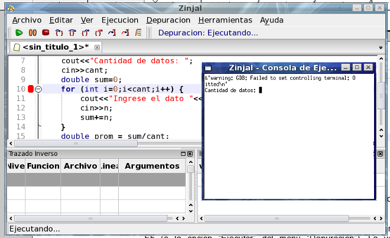
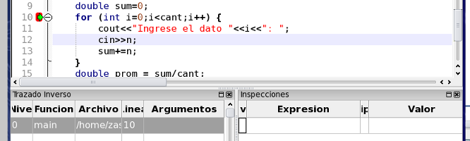

Una vez colocado el punto de interrupción, ejecute el programa con la tecla F5 (o la opción Ejecutar del menú Depuración). La ventana de ZinjaI desplegará dos nuevos paneles: el panel de trazado inverso y el panel de inspecciones. Inmediatamente, el programa comenzará a correr normalmente y le solicitará que ingrese el primer dato.

Ingrese 5 y presione Enter. Observará que el programa se detiene luego de leer el dato y la ventana de ZinjaI pasa al frente (o parpadea en la barra de tareas). En el margen izquierdo del código encontrará una flecha verde sobre el punto de interrupción. Esta flecha indica dónde se ha detenido el programa. Cuando se marca una línea, quiere decir que el programa se detuvo justo antes de ejecutar esa línea.

Debe notar que no puede detener el programa en cualquier línea. Algunas, como comentarios, declaraciones de variables o lineas en blanco, no tienen correspondencia con ningún fragmento del ejecutable, por lo que no son puntos de interrupción válidos. Si define un punto de interrupción en una posición inválida, el depurador se detendrá en realidad en la siguiente posición válida.
Volver... Continuar...